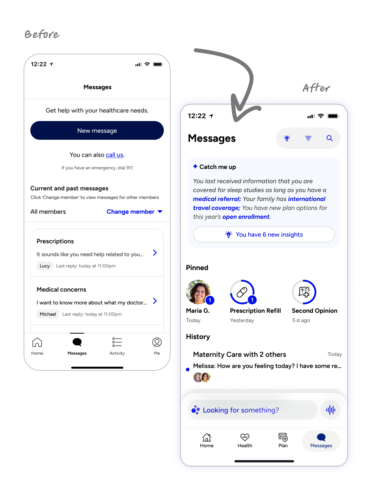

Members couldn't track their own support requests.
The fix wasn't at the feature level — it was at the object level. Here's how I untangled the relationships between conversations and cases to simplify navigation and speed up resolution.

Design lead from end to end — facilitating research and object mapping across care operations, clinical, and engineering, then owning task flows, prototypes, and the final design of our top level app pages.
FigJam for object mapping and flows, Figma for design, AI prototyping for clickable IA models, unmoderated testing for navigation comparisons.
Members struggled to self-serve, and resolution time climbed because our care teams had to connect the dots too.
The cost showed up as repetition and resulted in poor member satisfaction. Members had to re-explain context the system already had, and care teams often had to reference information in multiple places.
While much of this problem can be traced back to user flows and might be addressed with feature-level improvements, a more efficient and effective way was to examine the problem a layer deeper — at the object level.
The breakthrough was recognizing that a conversation and a case are both connected to an underlying thing — a user need — and that members only care about when and how their needs would be met. Once that object was established, our navigation followed.
Key deliverables included:
Facilitated cross-functional sessions to name every object a member has, what it contains, and how it nests — surfacing that conversations and cases were two views of one episode of care.
Traced real member intents against the new model. Where a flow needed a step the architecture couldn't explain, the architecture was wrong — not the flow.
Built clickable prototypes with realistic content so the team could argue with the IA instead of debating it abstractly — and took two competing navigation models into testing rather than one.
Shipped the home page and messaging landing page first — the highest-traffic surfaces — so the new model had to survive real volume before the rest of the app adopted it.
An IA only holds if the organization keeps speaking its language. Alongside the redesign I worked to make the object model a shared asset rather than a design artifact:
Teams that weren't part of the redesign now use its vocabulary by default — which is what keeps the architecture coherent as the product grows.
Home and messaging — the two pages members visit most — now share one structure and one vocabulary.
Conversations, cases, and visits resolved into a single need-based object used across design, product, and engineering.
Care operations, clinical, and engineering agreed on one definition of what a member has — before any screens were drawn.
The Dot Platform case study shows the full arc — from vision alignment to brand identity to a shipped multi-agent healthcare assistant.
See the Dot Platform →